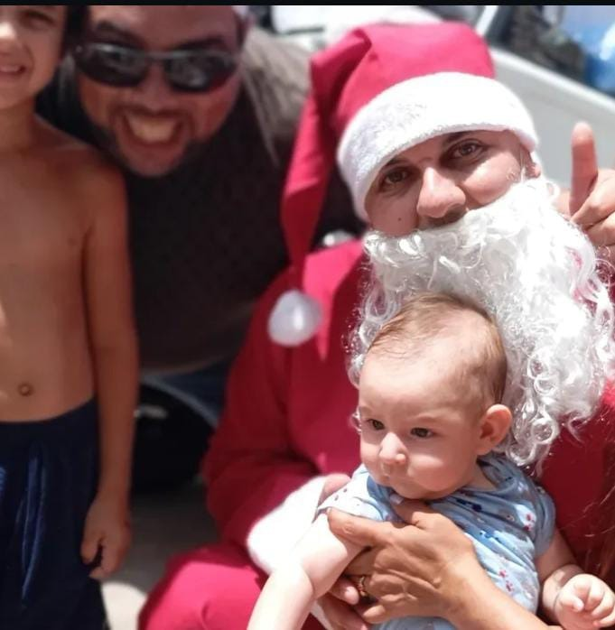
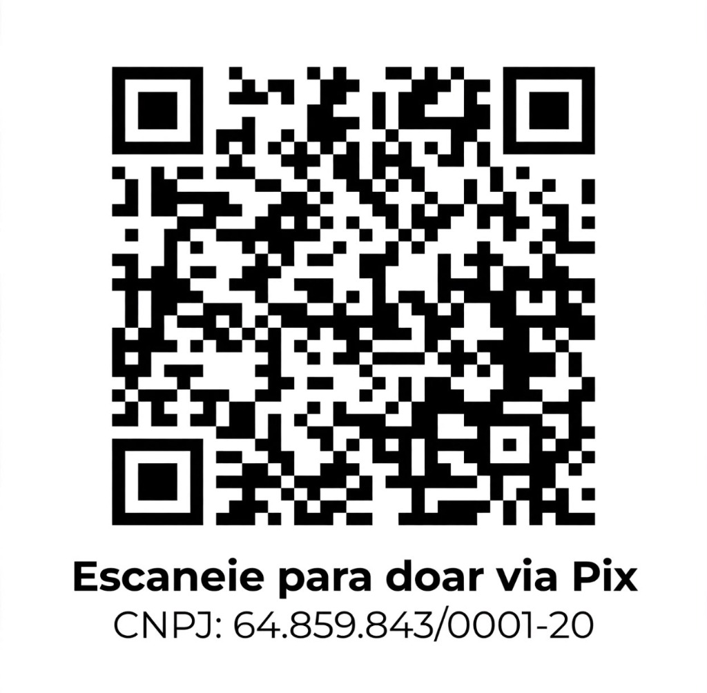

A MAGIA DO NATAL É FEITA POR NÓS!
Junte-se a nós em Blumenau - Santa Catarina para levar alegria, esperança e um sorriso a quem mais precisa. Sua solidariedade transforma vidas e acende a verdadeira luz do Natal.

16 ANOS DE AMOR E COMPAIXÃO
🎄 SOBRE NOSSA MISSÃO
Há 16 anos, nossa comunidade de Blumenau - Santa Catarina se une com um único propósito: fazer o Natal de centenas de famílias mais feliz, acolhedor e cheio de dignidade. O projeto Natal Solidário do Pancinha nasceu do sonho de que nenhuma criança deveria passar a noite de Natal sem um presente e nenhuma mesa deveria ficar sem o pão.
Graças a doadores voluntários e aos nossos pontos de coleta espalhados por Blumenau, arrecadamos cestas de alimentos de qualidade, brinquedos pedagógicos, kits de guloseimas e proporcionamos um dia repleto de abraços, brincadeiras e a visita do nosso Papai Noel comunitário.
Cada centavo doado é revertido integralmente em compras coletivas com fornecedores locais, garantindo os melhores preços e máxima transparência a todos os colaboradores.



SUA AJUDA CHEGA ONDE É MAIS PRECISO

Escaneie para doar via Pix
✨ DOE VIA PIX
Siga os passos abaixo no aplicativo do seu banco preferido:
Abra o aplicativo do seu Banco
Acesse sua conta em qualquer banco (Nubank, Inter, Itaú, Bradesco, BB, Caixa, etc.).
Escolha a Área Pix
Selecione a opção "Pagar com QR Code" e aponte a câmera para a imagem ao lado, ou use a opção "Pix Copia e Cola" com o CNPJ.
Confirme o Favorecido e o Valor
Verifique os dados da campanha Natal Solidário do Pancinha e digite o valor que o seu coração desejar doar.
Finalize e Espalhe a Magia
Pronto! Sua doação já estará garantindo um prato cheio e o brilho nos olhos de uma criança neste Natal.
PERGUNTAS FREQUENTES
Toda a arrecadação é 100% direcionada para compras de itens de alimentação de primeira linha, panetones e brinquedos novos. Não temos gastos administrativos: toda a logística é realizada por voluntários dedicados.
Você pode entregar doações de alimentos não perecíveis e brinquedos (novos ou em ótimo estado) diretamente em nossos 5 pontos de coleta oficiais em Blumenau - Santa Catarina:
A campanha acontece integralmente em Blumenau - Santa Catarina! As entregas acontecem em comunidades vulneráveis, instituições de acolhimento infantil e bairros periféricos mapeados da nossa cidade (como Itoupava Central, Progresso, Garcia e região). O evento conta com distribuição das cestas e a chegada do Papai Noel levando amor e brinquedos a todas as crianças.
Nossa campanha aceita doações até 20 de dezembro de 2026. Esse prazo garante tempo hábil para aquisição de produtos frescos e montagem cuidadosa das cestas antes da véspera de Natal.
Sim! Empresas parceiras podem apoiar tanto via Pix quanto com a doação direta de lotes de produtos. Basta entrar em contato pelo WhatsApp +55 47 99109-2967 para alinharmos os detalhes.